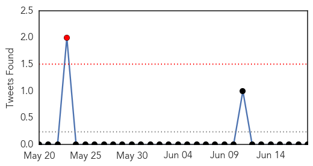
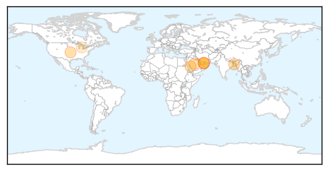
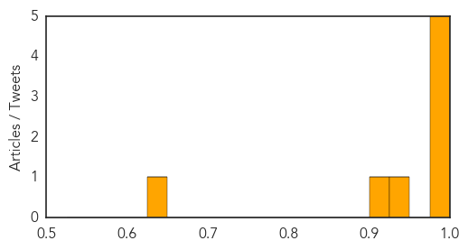
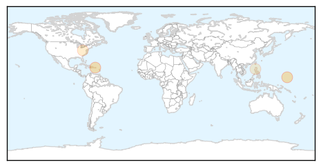
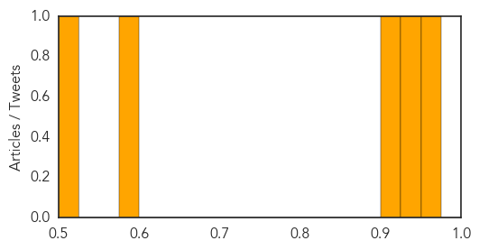

MERS
30-Day Web Trend
0 alerts, 0 warnings

30-Day Twitter Trend
1 alerts, 0 warnings

Article Locations
Article Confidences
Top Articles:
- 0.999
- Recent Study Reveals Decrease in Reports of MERS-CoV Virus in Saudi Arabia
- 0.998
- Results of MERS tests on Kuwait camels ‘negative’ - Precautions to prevent spread of virus - Kuwait Times
- 0.997
- With MERS threat, Morocco advises against Hajj
- 0.994
- Infected by Panic « The Majalla Magazine
- 0.986
- Ministry of Health Issues Travel Warning Against Hajj Pilgrimage Due to MERS-CoV Outbreak in Middle East
- 0.946
- Study launched to determine Mers transmissionHealthcare
- 0.909
- Dubai tests 1,000 camels to conduct Mers study
- 0.631
- USDA Offers First Conditional License for PEDV Vaccine
Top Tweets:
-
No tweets found for Jun 18, 2014
Measles
30-Day Web Trend
1 alerts, 0 warnings
30-Day Twitter Trend
0 alerts, 0 warnings

Article Locations
Article Confidences
Top Articles:
- 0.974
- Five hospitalised with measles in Hamilton
- 0.933
- DPHSS warns of measles outbreak
- 0.917
- All Walgreens and Healthcare Clinic Locations Across Ohio Now Offering MMR Vaccinations in Response to Executive Order - News Press Release
- 0.579
- West Virginia Immunization Summit and Recent Measles Outbreak
- 0.520
- More cases of kidney diseases noted every year
Top Tweets:
-
No tweets found for Jun 18, 2014